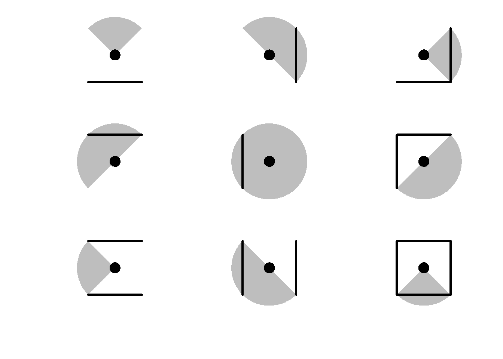
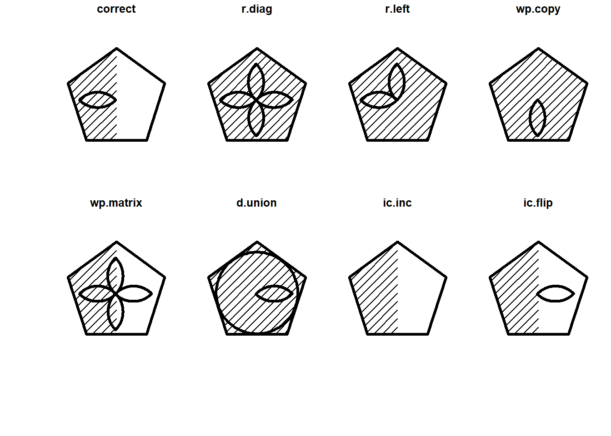

Studio preliminare
take II
Intro
Sulle dei risultati dello studio pilota dello studio preliminare, abbiamo deciso di portare aventi lo studio e quindi di sviluppare altre nuove matrici.
Per il momento, abbiamo deciso di:
eliminare la somministrazione delle Raven “originali” (studio per il futuro)
Considerare 3 matrici logiche e 3 matrici visuo spaziali
Abbiamo dei dubbi circa il tipo di disegno che vogliamo implementare. Nello specifico, non sappiamo se manetere un disegno within o spostarci su un disegno between, dove il fattore between è il numero di distrattori.
Qui trovate la skill map usata per generare gli stimoli che seguono.
Qui trovate i risultati dello studio preliminare (Rasch).
Di seguito riportiamo le coppie equivalenti di matrici con 8 distrattori.
Logic
Logic 1
0


1


Logic 2
0


1


Logic 3
0


1

Visuo
Visuo 1
0


1


Visuo 2
0

1


Visuo 3
0


1